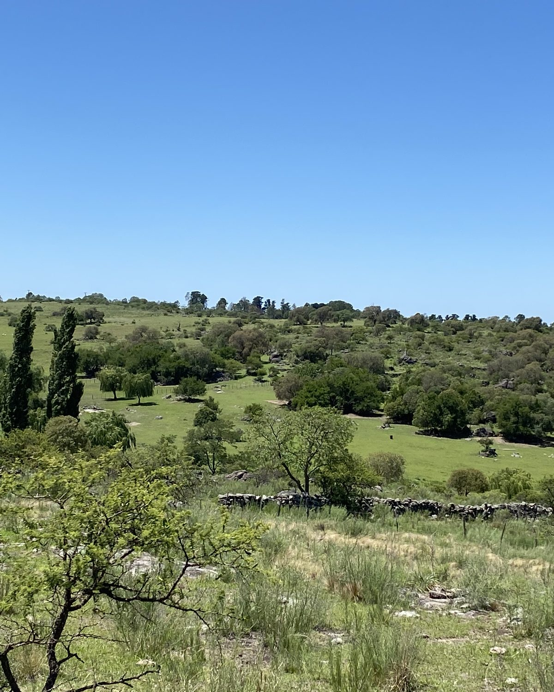
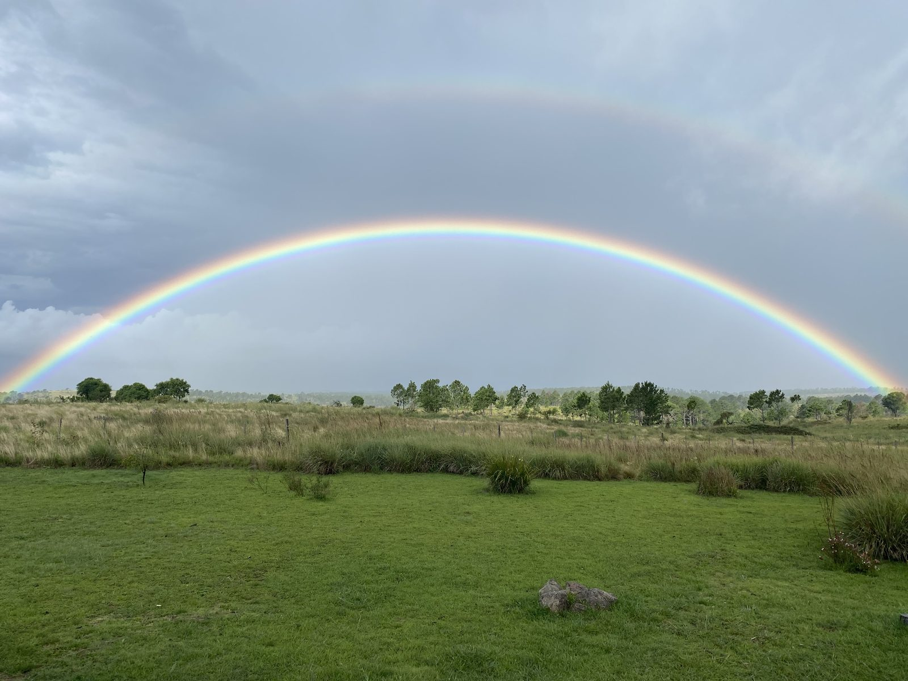
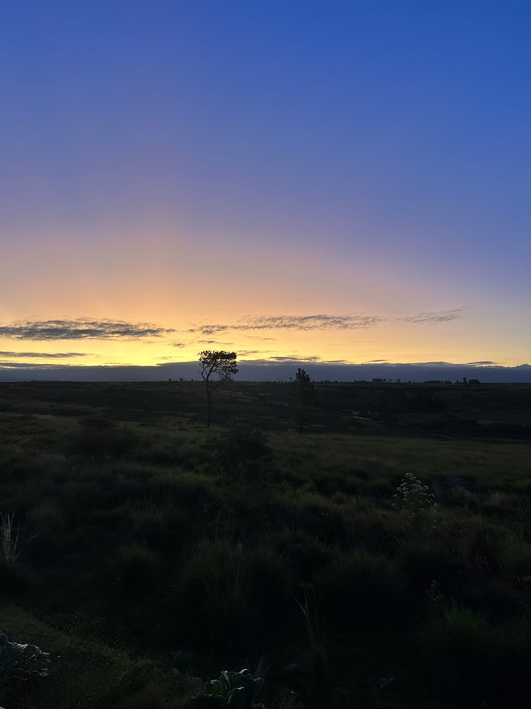
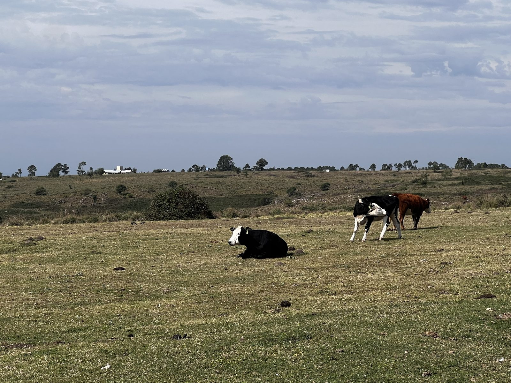
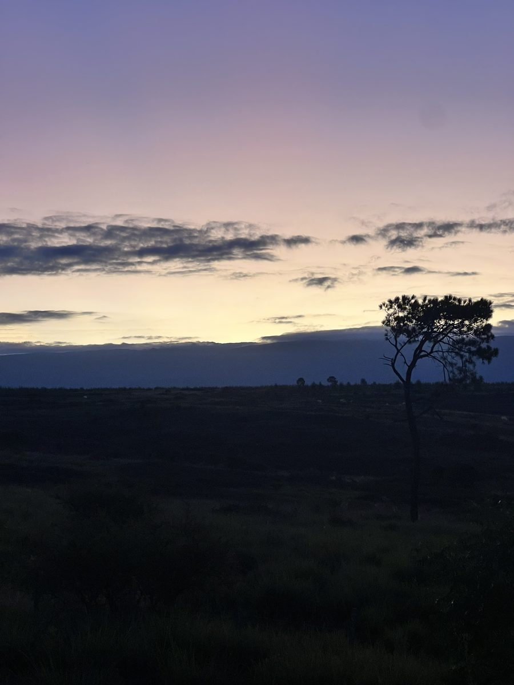
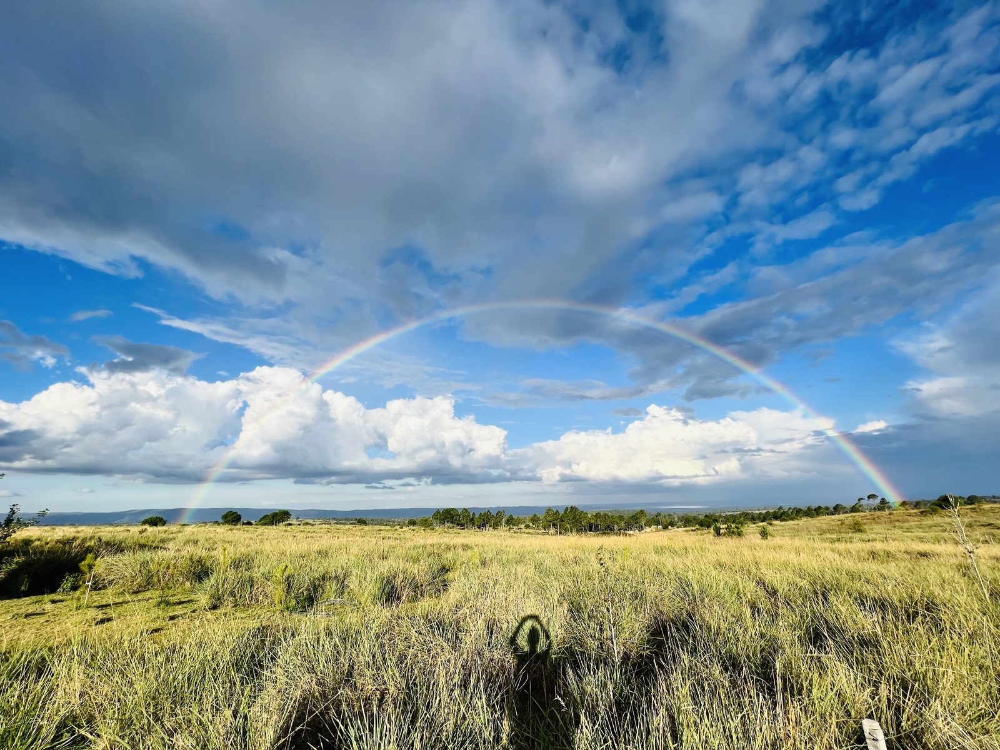
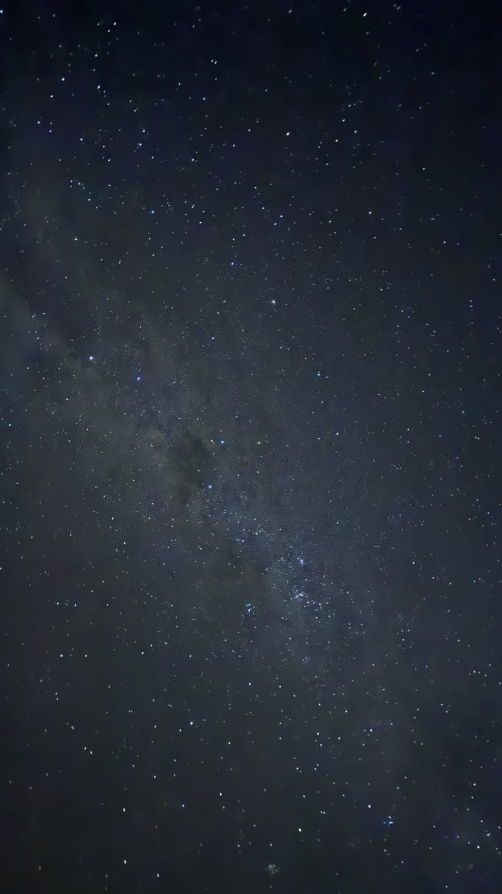
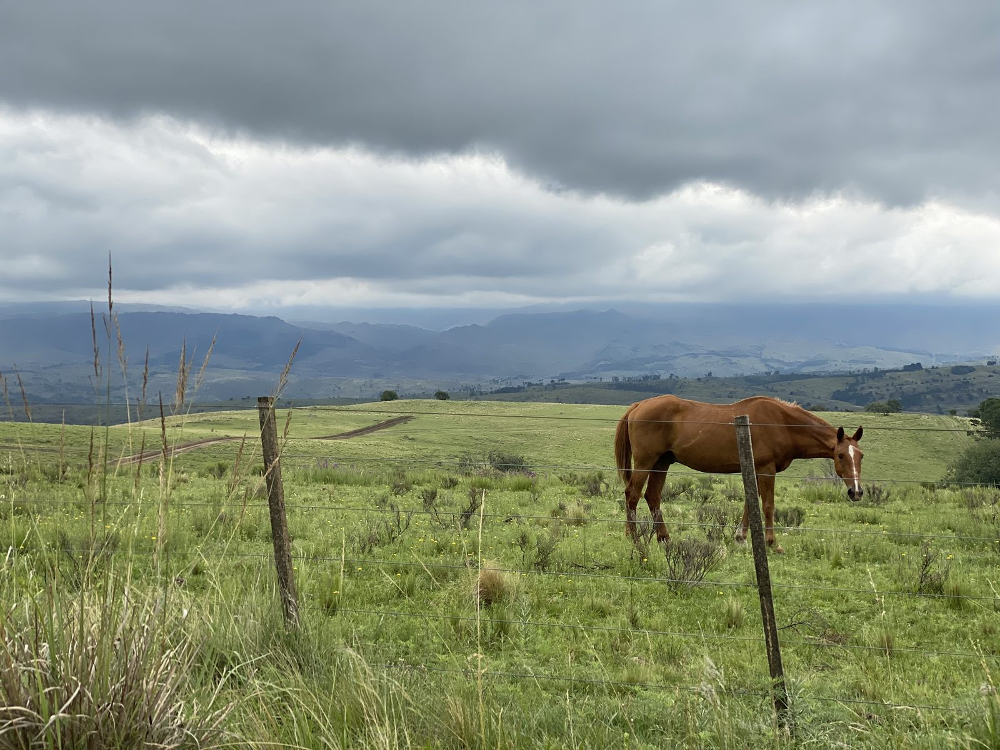
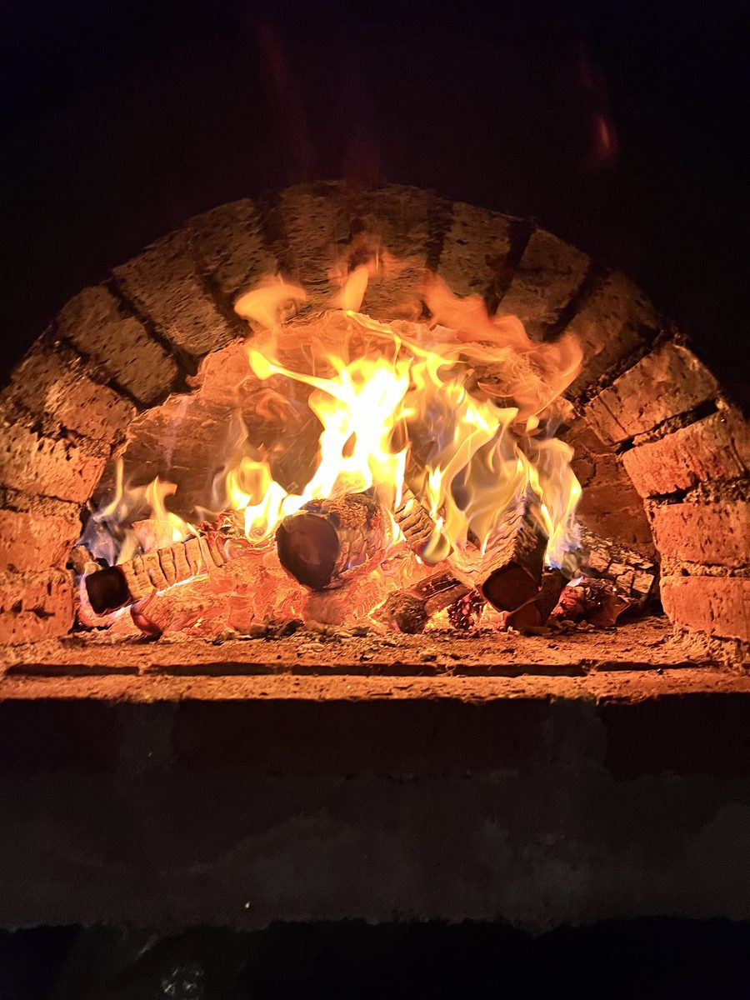
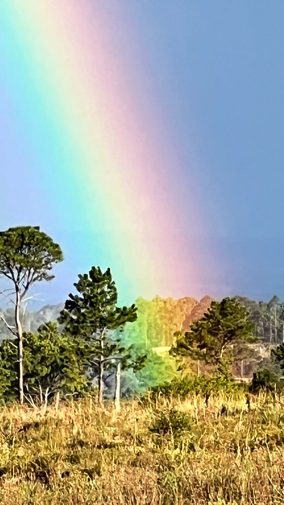

Más de una hectárea
Cada lote supera la hectárea —entre 1 y casi 3 ha— el privilegio cada vez más raro del verdadero espacio propio.
Valle de Calamuchita · Córdoba, Argentina
Un fraccionamiento de 50 hectáreas en Yacanto de Calamuchita. Veinticinco lotes de más de una hectárea, listos para escriturar, abiertos al cordón más alto de las sierras.
Desde USD — · financiación a convenir

Las sierras desde el faldeo del loteo, Yacanto de Calamuchita.El lugar
Yacanto de Calamuchita es uno de esos rincones que el resto del valle todavía no agotó. Tierra ondulada, arroyos, aire seco de altura y el horizonte recortado por el Champaquí, el pico más alto de las sierras de Córdoba.
Sobre ese faldeo se levanta el fraccionamiento: cincuenta hectáreas divididas en parcelas generosas, pensadas para una casa con espacio real alrededor —no un lote apretado, sino un pedazo de campo serrano con título perfecto.
Por qué acá
Cada lote supera la hectárea —entre 1 y casi 3 ha— el privilegio cada vez más raro del verdadero espacio propio.
Sin trámites pendientes ni promesas. Mensura aprobada y dominio en condiciones de pasar a tu nombre.
La orientación del fraccionamiento abre el frente al cordón más alto de Córdoba. Postal permanente.
A pocos minutos de Santa Rosa y Villa General Belgrano. Servicios, gastronomía y rutas a mano.
Aire seco serrano, cielo limpio para ver las estrellas y el silencio que solo da la sierra.
Te paso disponibilidad, superficies exactas y valores actualizados.
Escribir por WhatsAppEl plano · relevamiento real
Cada parcela está dibujada a partir de la geometría real del loteo. Pasá el cursor —o tocá— para ver número y superficie.
Geometría derivada del relevamiento original (2022). Superficies aproximadas, sujetas a mensura definitiva.
Galería · fotos del lugar
Atardeceres sobre el Champaquí, cielos sin luces, campo abierto. Todo a metros de tu futuro lote. Tocá una foto para verla en grande.









El pueblo
No es un loteo aislado: a minutos tenés un pueblo serrano de verdad, con servicios, gastronomía y la base del Champaquí en la puerta.
Parrillas con trucha y cabrito, pastas y empanadas caseras, casa de té, café y heladería artesanal.
Cabañas, posadas y hosterías que reciben turistas durante todo el año.
Lo necesario para el día a día sin tener que bajar al valle.
Servicios y energía del pueblo a través de su cooperativa, además de la comuna local.
Colectivos a Santa Rosa de Calamuchita y Villa General Belgrano, y acceso por camino consolidado.
Puerta del Champaquí, El Durazno y Cerro Pelado: zona de fuerte demanda de alquiler temporario.
Cómo llegar
El fraccionamiento está en Villa Yacanto de Calamuchita, a 1.300 m sobre el faldeo de las Sierras Grandes, con el cordón del Champaquí de frente.
Distancias aproximadas — confirmamos la mejor traza de acceso en la visita.
Contacto
Dejanos tus datos y te enviamos disponibilidad actualizada, superficies, valores y condiciones de escritura. O escribinos directo por WhatsApp.
Hablar por WhatsApp ahora